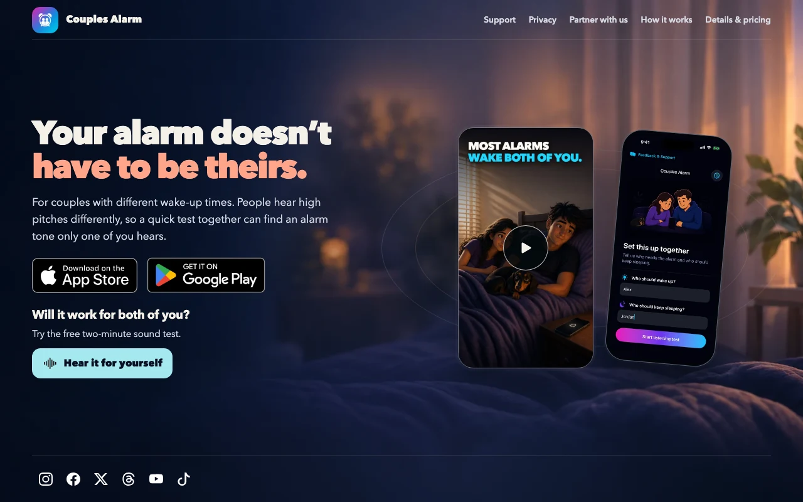

01What I built
I paired a listening check and bedside confirmation with AlarmKit scheduling for one-time or weekly alarms. If no tested tone fits, setup stops rather than guessing.
02What it enables
Partners can test a tone before adding it to their wake-up routine. Partner responses and alarms stay on the iPhone.
03Tools & methods